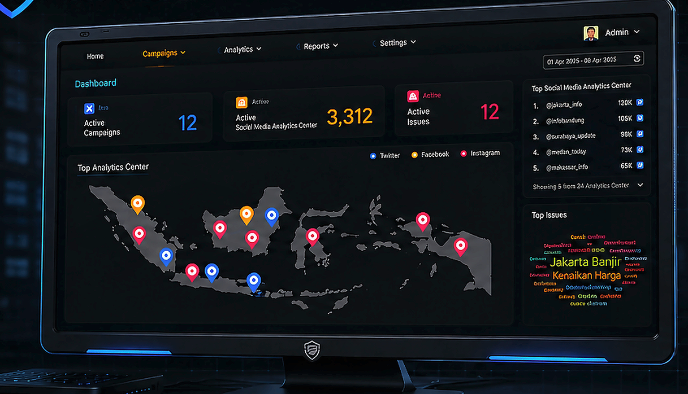
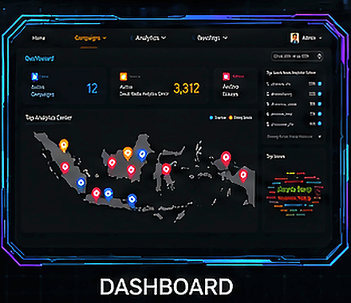
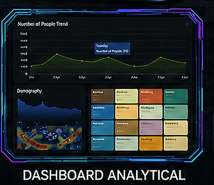
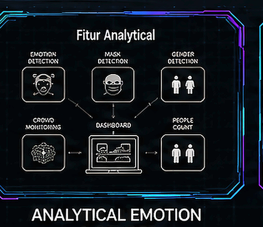
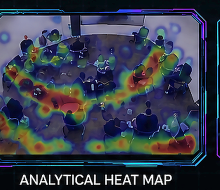
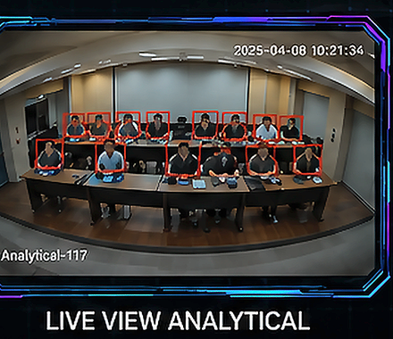
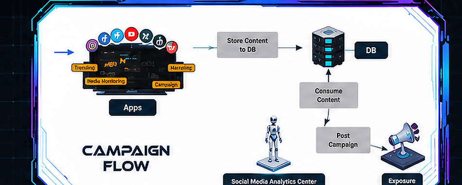
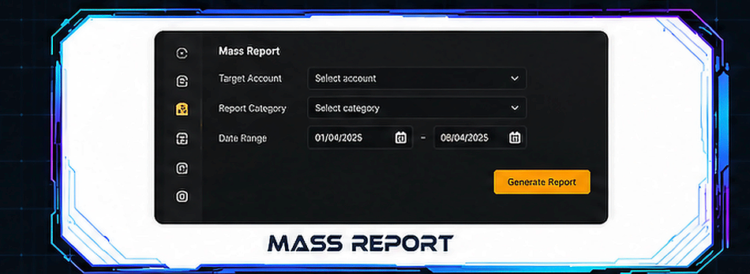
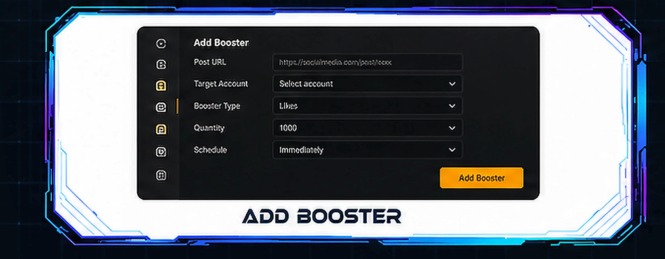

SOCIAL MEDIA
ANALYTICS CENTER
Social Media Analytics Center
Advanced open-source intelligence and real-time social monitoring platform designed to aggregate, process, and analyze massive volumes of social media conversations, trends, and user behavioral patterns across multiple networks.
Dashboard Analytical
Comprehensive analytical command center delivering real-time metric visualization, automated sentiment tracking, threat identification, and deep conversational insights.






CAMPAIGN FLOW
Conduct scheduled mass campaigns with customizable topics. Campaign content is sourced from social media and mainstream media posts based on the selected topic. Additionally, content can also be created manually.
MASS REPORT
In Social Media Analytics Center, users can report abuse against an account. All reports will be targeted to the specified account with the abuse category determined by the user.


BOOSTER
Social Media Analytics Center can boost a post using the post's URL. The boosting is done in the form of likes and replies/comments. This boosting is useful so that Social Media Analytics Center interacts with the targeted post, thereby increasing the engagement of the post.